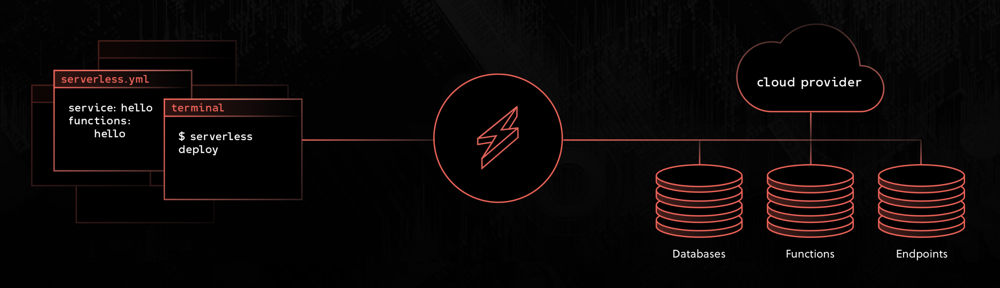

💁 서버리스, 정확히는 람다를 접한지도 2년정도가 되어가는 것 같다. 서버리스를 사용하면서 느꼈던 점을 조금은 정리하고자 한다. 서버리스에 대한 설명보다는 이를 활용하기 위한 프레임웍 그리고 문제등에 대해서 언급하고자 한다.
AWS 람다(Lambda)로 대두된 서버리스가 강점으로 내세우는 것 중 하나는 관리다. 사용한 만큼만 돈을 지불하는 구조도 매우 유리하며 스케일링에 대한 걱정도 없으므로 좋은점이 많다. 그러나 함수 한두개로 서비스가 작성되는 것은 아니니 많은 함수를 어떻게 유연하게 배포하는가는 또 다른 차원의 이슈로 남아있다.
서버리스 프레임워크
아쉽지만 개발에 대한 패러다임 변화가 일어났을 때 필요한 프레임워크에는 국산이 없는 것 같다. 시니어 개발자들이 자체 인프라를 가지고 있는 곳에서 일하는 점과 영어가 또 이를 힘들게 하는 한가지 이유이리라.
몇 가지 서버리스를 관리하기 위한 프레임워크가 존재하며 여기에는 배포가 중심이 된다. 기억이 안나는 이름까지 억지로 적을 생각은 없다. 사용해 온 프레임워크을 기준으로 말하겠다.
Apex
TJ에 의해 Go언어로 작성되었다. 내 첫 서버리스 프로젝트는 apex 를 통해 배포를 하려했다.
apex 는 테라폼(terraform) 을 통해 인프라 스트럭쳐 레벨을 제어한다. 이는 매우 훌륭한 선택이었다고 생각한다. TJ는 스타개발자지만 조직이 아닌 개인 레벨(그것도 바쁜 개인)을 통해 운영되는데 대한 불안함이 있었다.
결론적으로 나는 빠르게 serverless 라는 서버리스 브랜드 네이밍을 선점한 프레임워크로 이주했다. apex 가 때로는 응답없음 등을 보이는데 이때 인프라스트럭쳐가 어떻게 배포되었는가 등에 정보를 얻기 어려웠기 때문이다.
Serverless
현재까지 사용하고 있는 프레임워크이다. 서버리스는 클라우드 포메이션(Cloud Formation)을 기반으로 동작하는데 개인적으로 이 부분이 문제가 된다고 느낀다. 유연성이 상당히 떨어지며 생성된 리소스를 가지고 외부에서 수정을 가했을 때 배포환경이 깨진다거나 하는 것이 그 것인데 이는 아래서 충분히 다시 얘기하기로 한다.
문제점
최근에 이를 사용하면서 많은 생각이 들었는데 일단 플러그인을 코어 레벨로 가져갈때 생기는 문제점이다.
💬 나는
vim을 사용하는데 이를 GUI 에디터 수준으로 활용하기 위해서는 많은 플러그인 세팅이 필요하며 엄청난 시간이 소요된다. 때론 많은 플러그인간의 종속성 이슈가 발생하기도 하며 이러한 플러그인 이슈가 코어 기능을 깨버리기도 한다.
무엇을 작성하던 로컬테스트는 필수이기 때문에(서버리스는 배포 자체가 s3 를 사용하기 때문에 비용이다) serverless-offline 그리고 serverless-webpack이 들어가게 될텐데 이들의 실제 서버의 동작을 완벽하게 지원하지 못하는 점은 차치하고 함수가 늘어날 수록 디펜던시가 늘어감에 따라 기하급수적으로 느려지게 된다는 점이다. 게다가 내 로컬 설정 이슈인지는 모르겠으나 무언가를 하다보면 HMR이 일어나는 도중 로컬 서버가 죽어버린다(글을 적다보니 웹스톰의 메모리 이슈일 수도 있겠다는 생각 🤔). 오래걸리는 죽으면 다시 켜야하고 키면 오래걸리는 악순환에 빠져버렸다.
클라우드 포메이션 기반
apex 가 테라폼 기반인 것과 달리 serverless 는 클라우드 포메이션을 기반으로 한다.
💁 클라우드 포메이션은 AWS에 자체적으로 지원하는 템플릿이다. 잘은 모르지만 스택에 이름을 부여하고 필요한 리소스를 선언한 템플릿 문법을 통해 종속성을 포함하여 서비스에 필요한 구조등을 한번에 배포할 수 있게 해주며 그대로 삭제 또한 가능하다. 때문에 세미나나 튜토리얼 등에서 자주 쓰인다.
여기서 많은 단점들이 생긴다고 생각하는데 이 부분을 우회할 방법등이 있을지 모른다. 그럼 단점들을 나열하고 고통에 대해서 이야기해본다.
리소스가
serverless.yml을 통해 생성되어야 참조가 가능하다.서비스 전체를 서버리스로 캡슐화 할 수 없다. 이 말은 공통으로 사용하는 디비 등도
serverless등을 통해서 선언 되어야한다는 의미이며serverless를 통해서 전체 서비스를 제어하지 않는 한 디비가 이 곳에 있어서는 안된다.생성된 리소스를 외부(웹 콘솔 등)을 통해 변경된 경우 오류를 발생 시킨다.
이건 클라우드 포메이션 이슈로 보인다. 더러운건 마찬가지나 테라폼은
import명령등을 통해 변경 내역 흡수가 가능하다. 가능과 불가능에 대한 엄청난 차이가 있다.serverless.yml의resource문법은 클라우드 포매이션 문법 그 자체다.serverless는 자체yml설정 문법을 가지고 있다. 결국yaml은json이므로 클라우드 문법을 그대로 차용하는데 이는 오히려 러닝커브를 낮출 수 있는 방법이라고도 생각되나 결국serverless를 사용하기 위해 뭐하나 피해갈 것이 없다는 느낌이다. 그에 반해 테라폼은hcl이라는 hashcorp 자체 언어를 사용하지만 이는 hashcorp 여러 서비스의 언어에서 공통으로 쓰이며 좀 더 언어 레벨에 가깝다.hcl이 구조를 갖춘 언어 레벨이라고 한다면serverelss.yml은 설정 파일로 시작했으나 이로는 모두 커버가 안되니 템플릿 엔진과 같이 특수한 토큰이 들어간 불리한 구조다. 여기서 오는 혼란 또한 존재한다.플러그인의 복잡성
플러그인의 구현 자체는 매우 쉽게 되어 있다. 최근 문서를 보니 플러그인에서 서브 커맨드들이 파라메터를 받는 것을 제한하기 시작한 것으로 보이며 이 때문에 플러그인의 유연성이 희생되고 있다. 이렇한 방향이 설정되는 이유는 이 유연선이 코어에 간섭이 있기 때문이리라 예상한다.
serverelss.yml의custom속성을 통해 제어는 가능하다.함수의 재사용 불가
타 서비스에 동일한
custom authorizer를 사용한다고 했을 때 이 함수를 다시 복사, 붙여넣기 하는 방법에외는 방법이 없다. 함수가 다르게 배포되서 당연한 얘기인 듯 싶지만 이를 모듈화하여 배포하기에도 어려움이 있다. 그래서 최근에는 Serverless Component 는 프로젝트가 4월경에 시작되었다.
또한 많은 플러그인들이 있으나 이 들에 대한 관리 주체 또한 다양하며 수준 또한 다양하다. 플러그인 체제라는 것이 항상 그러하듯.
프레임웍은 무엇을 해결해야 하는가
serverless, apex 등은 같은 목적을 가지고 태어나 다른 방식을 취했다.
ToDo
해야할일을 정의해본다면 기본은 어렵지 않다. Lambda 는 어렵게 시작하지 않았다. 람다의 시작은 웹 콘솔에가서 async/await 도 지원하는 node8 기반으로 index.js 파일하나 짜면 돌아가게 되어있다. 물론 서비스 레벨에서 이 것 만으로는 할 수 있는 것이 별로 없으므로 많은 다른 모듈을 포함하게 되며 이를 통해 zip 파일을 s3 에 올리고 배포하는 것이 일반적이다.
1 | # 코드작성 | 빌드 | zip | 배포 | 이전코드 삭제 |
대충 이런 파이프 라인이다. 여기에는 IAM 설정등에 대한 추가적인 것들이 선언 되어야한다. 한 곳에 모아야 관리가 쉽고 준비가 안된상태에서 한 곳에 모으면 유연성이 파괴된다. 쉽지 않지만 이 문제를 해결해야하는 것이 프레임웍인데 현재는 조금 아쉬운 점이 있다.
아쉽다.
위에서 주로 사용하는 serverless 를 위주로 단점을 나열했지만 serverelss 는 그런 프레임워크들 중에서도 살아남은 케이스다. 플러그인을 통해 유연성을 제공했고 플러그인 또한 설정이 필요하기에 serverelss.yml 에서는 custom 속성을 통해 이런 추가적인 설정을 지원하고 있다.
잘 생각해보면
잘 생각해보면 플러그인을 잘 짜서 내가사용하는 TypeScript와 노드에서 더 빛을 발할 수 있고 간단해 보이는 rollup.js 등을 이용해서 최적화를 할 수 있는 것 같기도 하다.
또한 serverless-offline 에서 웹팩을 구지 먹고 들어가서 빌드 속도를 현저히 다운시켜야하는가에 대한 고민도 어찌보면 serverless 가 아닌 플러그인 종속 이슈로 볼 수도 있다. 어쨋거나 이러한 점은 로컬 개발환경에서의 생산성을 극도로 저하시키며 자바스크립트 가 언제부터 이런 긴 컴파일 시간을 필요로하게 되었는가 생각해보게 한다. 코드 자체도 Go한테 밀리는데 생산성까지 밀리면 공부 이슈를 제외하고는 Go로 넘어가지 않을 이유가 무엇인가? 🤔
하지만 이런 것은 자바스크립트 자체가 아닌 프레임웍과 그 플러그인에 대한 이슈이며 좀 더 최적화를 해볼 생각도 있지만 결국 클라우드 포메이션 기반이라는 한계, 즉 디 디비와 종속성 이슈등을 풀어낼 수 있는가? 하면 꽤나 회의적이다.
결론없는 마무리
일단은 앞으로 가야하기 때문에 이 모든 비효율을 감당하고 있다. serverless 에 대한 비난글이 아니다. 덕분에 여기 까지 왔다. 단지 좀 더 큰 규모의 함수들을 제어하기 위해 serverelss 는 그 것을 감당하기 위한 효율성이 있는 토대를 가지고 있는가에 대해 고민하게 된다. 결국 인프라쪽 코드가 섞이면 피해갈 수 없는 영역이 있지만 테라폼 같은 경우는 하나의 언어 이기 때문에 코드 어시스트라도 받을 수 있지만 서버리스는 잘 모르겠다. 내가 모르는 것인지.
시간이 날 떄 좀 더 최적화된 배포환경에 대한 욕심이 난다. 💬 ?